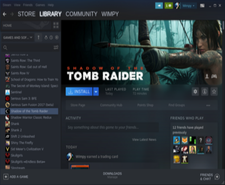
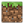

|  |
Get your game on! Ubuntu MATE is not just about work, it's also great for play! You'll find Steam and Minecraft in the App Center. We've also selected the very best open source games and stocked the App Center with platformers, shoot 'em ups, racers, flight simulators, puzzlers, turn based strategy and first person shooters. Supported software Steam Minecraft |